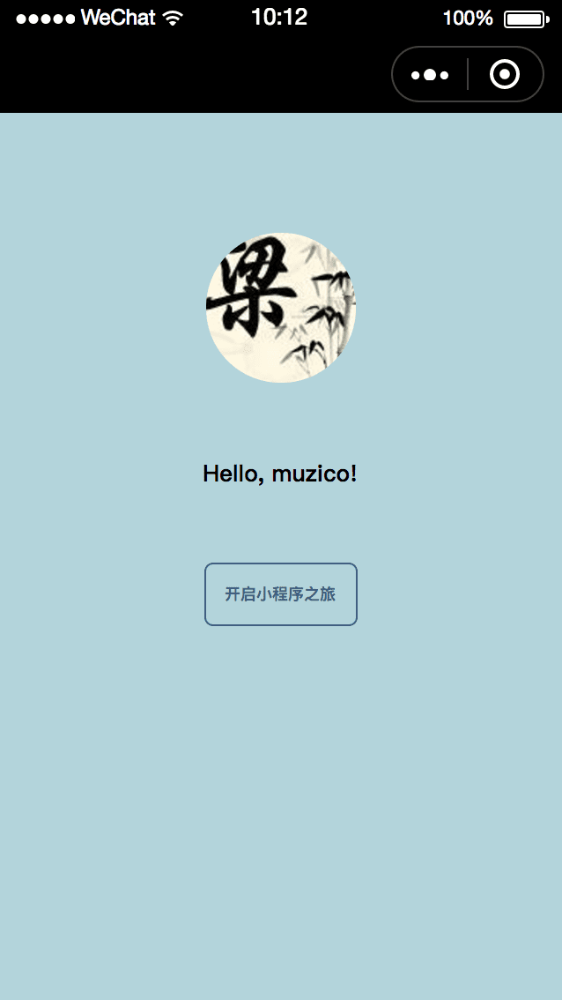

微信小程序 从零开始的开发，简单的单页
首先，我们来看看本次项目的最终面貌吧。
本次项目，所使用到的组件只有 image, text。 所以说超简单。 先创建一下程序入口。
app.js app.json app.wxss
这三个是必须有的，也是程序最基本的。 看名字也大概知道是什么来的， wxss，其实就是 css，懂不。 后面还会有一个 wxml，其实就是 xml，可以视为 HTML，为页面的骨架。
由于本次的单页项目太简单了，这三个文件不用怎么写入内容。 噢，不，app.json，必须用到，它用来配置页面的路径，没有这个，加载不到页面。
接续创建文件~ 这次是个单页项目，那么先创建单页的目录吧。 先创建一个 pages 文件夹，这个是用来放所有页面的文件夹。 这次页面的文件夹叫 welcome。
所以创建如下：
pages - welcome - welcome.js
- welcome.wxss
- welcome.wxml
也可以顺便创建 welcome.json，不过这里用不到。 顺便说刚创建的时候这是个空白页面， 会报这种错误：
pages/welcome/welcome.json 文件解析错误 SyntaxError: Unexpected end of JSON input
这个时候可以随便写个内容就得了，注意是JSON格式的，比如：
{}
好了，welcome单页所需要的东西准备好了。 在正式开发前，我们先做一些必须的东西——配置app:
前面也提过， app.json 是用来配置的页面的。 所以接下来，就是： app.json:
{
"pages": [
"pages/welcome/welcome"
]
}
这部分更详细的信息，可以看官网的文档。点击这里
我们的的单页 welcome 就是在 pages 数组里面。 pages数组记录很多页面的路径。 这里，我们只是看到welcome，是不是好简单的样子。 其实微信做了处理，简化了写代码，而这些必须的步骤就是你一开始创建的单页的文件。
welcome.js welcome.wxml welcome.wxss
看到他们的名字是多么统一吧，这就是理由。 微信根据你配置的单页的名字，把名字一致，后缀不同的文件，都引入了。 在写代码的时候，你不需要引入任何文件，是不是很简便啊~
说起来，我们会用到一张图片，创建一个 images 的文件夹。 然后.......打开项目的硬盘地址，把图片放进名为 images 的文件夹里面。 嗯，微信不支持拉图片。
下面我们只需要往 welcome.wxml 和 welcome.wxss 写入代码就可以了。
welcome.wxml:
<view class='container'>
<image src='/images/muzico.jpg' class='user-avatar'></image>
<text class='user-name'>Hello, muzico!</text>
<view class='moto-container'>
<text class='moto'>开启小程序之旅</text>
</view>
</view>
welcome.wxss:
page {
background-color: #b3d4db;
}
.container {
display: flex;
flex-direction: column;
align-items: center;
}
.user-avatar {
width:200rpx;
height:200rpx;
margin-top: 160rpx;
border-radius: 100px;
}
.user-name {
font-size: 32rpx;
font-weight: bold;
margin-top: 100rpx;
}
.moto-container {
margin-top: 100rpx;
border: 1px solid #405f80;
width: 200rpx;
height: 80rpx;
border-radius: 5px;
text-align: center;
}
.moto {
font-size: 22rpx;
font-weight: bold;
line-height: 80rpx;
color: #405f80;
}
虽然welcome.js 这次没有用到，但是会报一个错误：
appservice:1010 pages/welcome/welcome.js 出现脚本错误或者未正确调用 Page()
解决这个错误，很简单： welcome.js:
Page({
})
加上这个代码就可以了。
. .
嗯，其实很简单啊，就是在写网页。
<view> 这个标签，不要觉得好高大上，你直接理解为 <div> 就得了。
welcome.wxss 里面，为啥会写到 配置 page 呢？ 其实自己去看看页面的代码就行了：
其实你写的 welcome.wxml 还有一层 <page></page> 所包含着。 要设置背景色，然后要这么做啊。
把一些重复利用到的 CSS 内容可以放到 app.wxss里面，比如字体:
text {
font-family: MicroSoft Yahei;
}
最后你会发现上述的代码都弄好之后得到的界面是： 
...... 和效果图差了头部！！！
其实这个也是在 app.json 配置的，看文档吧~ app.json:
{
"pages": [
"pages/welcome/welcome"
],
"window": {
"navigationBarBackgroundColor": "#b3d4db"
}
}
app.json 配置的是全局的，而且包含很多的内容。 而单页的 .json 文件只是配置当前单页的window内容。 所以要改变头部也可以这么写：
welcome.json:
{
"navigationBarBackgroundColor": "#b3d4db"
}
ok，好了~~~收工。
最后的体验感觉就是，我在写 网页（HTML5）。 小程序不是什么高大上的东西，就是 网页（HTML5）。 我觉得新颖的，估计是 wxss，wxml，第一次看到的时候觉得哇塞什么鬼啊。原来就是 css，xml 的别名。。。。。。。。。